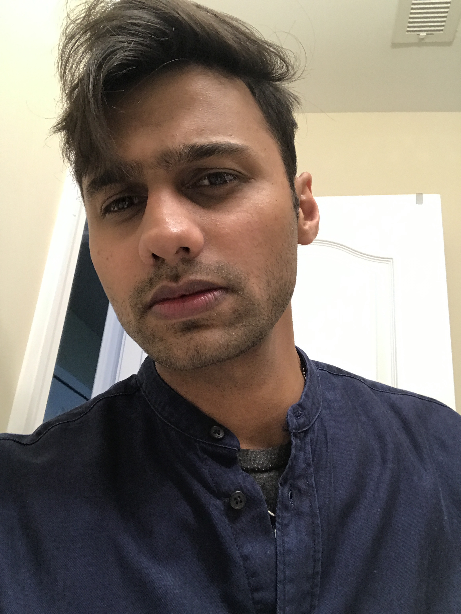

WELCOME TO MY FIRST WEB PAGE
"Syed Younas Raza"
_____________________________________________________________________________________
Introduction
My name is Syed Younas Raza, I am 23 years old. I am currently inrolled in UGA (University of Gerogia). This is my first semester in UGA and my intended major is MIS (Managment Info System). Currently, I am a Junior with an MIS major and I absolutely love it. I enjoy the things I am learning in my upper division courses and my performance also reassures me that I understand the material as well.
Usually i do alot of things when I am free but Two things for which I am always up for are:
"Photography and Traveling".
Besides all the fun and studies I am also doing small online busiess of selling custom and handmade jackets. Rightnow i am using ebay and amazon to sell jackets but soon will be luanching a my own website which will alow me to enter the real fashion industry.
Please visit other two tabs for Traveling and business pictures.
© Copyright 2018 S. Younas R.